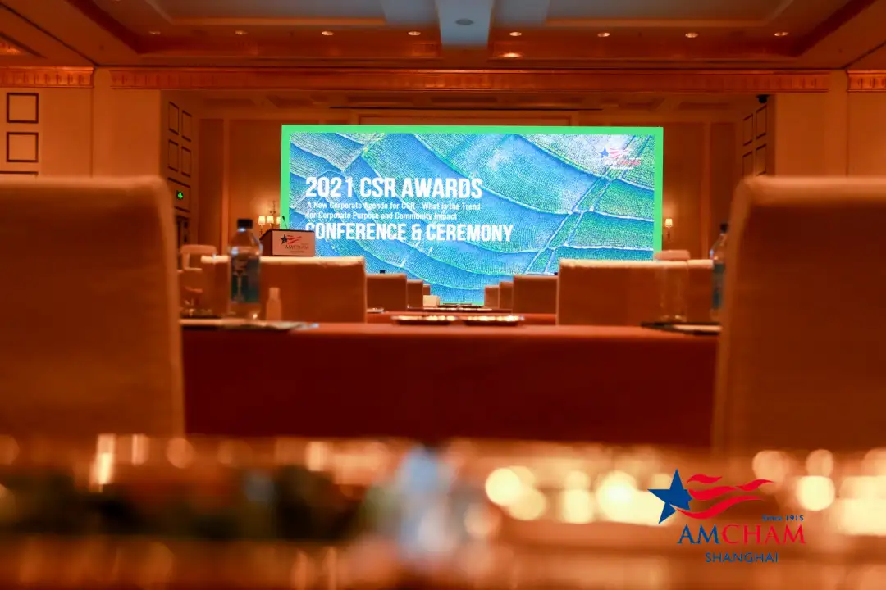
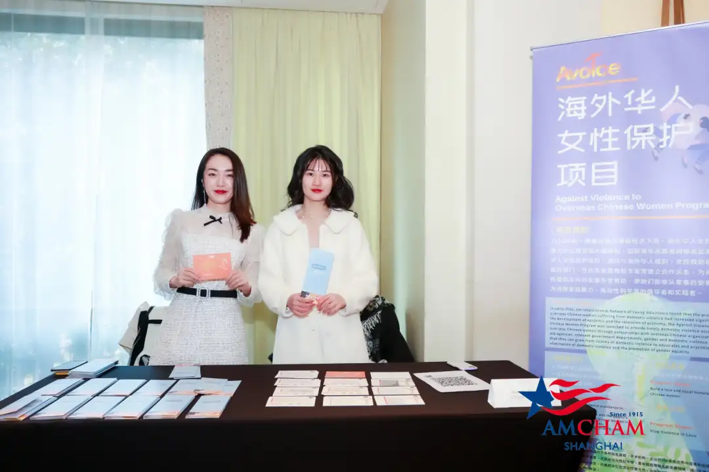
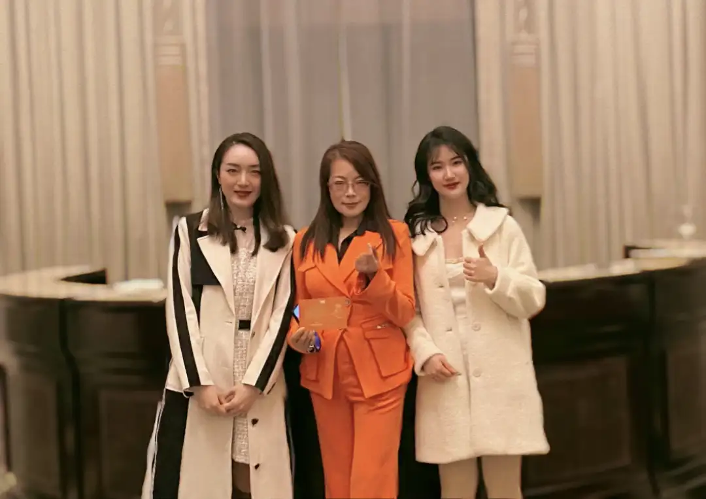

Avoice海外华人女性保护项目受邀参加上海美国商会于12 月1日在上海半岛酒店举行的企业社会责任会议。本次活动旨在向国际社会展现中国公益事业发展成果，并为公益组织创造交流与学习机会，探索联动、互促的合作模式。

会议主要围绕两个主题展开讨论，分别是“最大限度发挥企业社会责任的潜力”和“中国的公司驱动型传播”。
“最大限度发挥企业社会责任的潜力”是所有参会公益机构最感兴趣的主题，通过这个主题，大家共同探讨了企业社会责任对于企业文化建设、 赋能利益相关者、传递影响力的重要性，以及在当前的经济形势下，企业如何加强与公益机构的合作，更好地践行社会责任。
志愿者郑安妮和季佳璐代表Avoice参加了本次活动，并向参会机构宣传介绍了项目的整体情况、最新进展和未来的实施规划，多家机构对Avoice项目给予了积极反馈和进一步沟通合作的意愿。

通过本次活动，Avoice不仅结识了在公益领域扎根的组织机构，并且在与他们的交流中得到很多有趣的发现。
“来自大山”的项目展台上展示了琳琅满目的传统文化手作，这个项目通过在少数民族地区中小学组建文化才艺社团，教孩子们学习乡土歌曲、舞蹈、乐器、手工艺和少数民族语言，恢复孩子们的民族记忆，提升民族文化自信，把孩子们培养成为民族文化的传承者。
“恩派” 的参会代表则介绍了WEable青年创新项目所聚焦的“韧性青年”主题，以及如何为青年行动找到好创意和新起点，从中我们也看到了与恩派共同开展志愿者赋能的潜在合作机会。
“自然向善”展示了模拟自然艺术展视频，设计精美且极具设计感的场景设计图很是吸睛。
“青年成就”的小伙伴认识Avoice的成员，除了感叹缘分妙不可言，还热情地与我们拍照互动，并且格外赞赏Avoice的项目理念，表达了未来合作联动的意愿。
通过这次活动，Avoice结识了诸多志同道合的公益伙伴，在开放、包容的氛围中分享实践经验，反馈建议和感受，反思教训和不足。 相信在未来的公益道路上，Avoice会与更多的公益伙伴携手共进，互促发展。

文字 I Avoice Team
排版 I 韩瑞洋
图片 I Avoice 志愿者
1.需要相关咨询和帮扶
2.想要获得Avoice采写发声支持
3.想要加入海外华人女性保护社群
4.想要合作或者为项目提供资源
欢迎添加Avoice女性保护小助手微信：Avoice-WomenAid

Avoice期望关注女性权益的您能够帮助我们转发此推文至海外华人社群、微信朋友圈等平台。
您的每一次传播都可能让我们触及到一位需要帮助的女性，您的每一次发声都可能是一位受家暴的她获得长期援助支持的起点。点击在看关注我们，贡献自己的一点力量！
爱无暴力
Stop Violence In Love
转载请联系本公众号
微信公众号：海外华人女性保护项目
微博：海外华人女性保护项目
知乎：Avoice华人女性保护
B站：Avoice华人女性保护
快手：Avoice华人女性保护
抖音：海外华人女性保护项目
Instagram：avoice_womenaid
领英：Avoice海外华人女性保护
邮箱：Av[email protected]